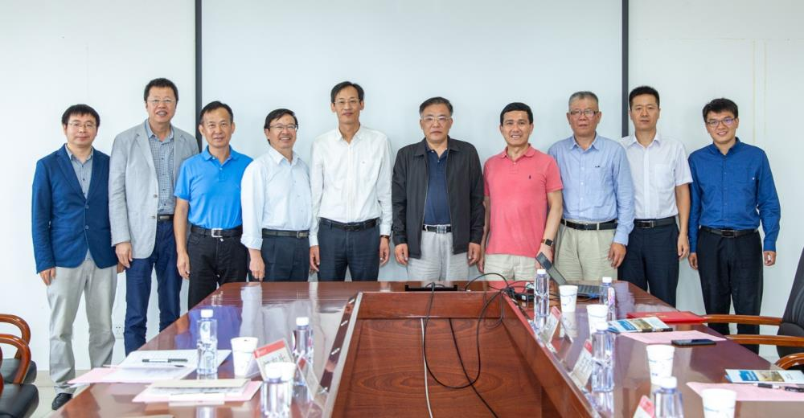
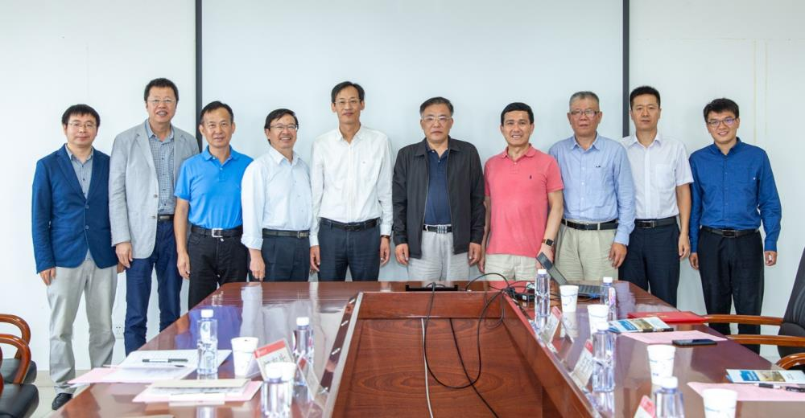

9月16日上午，由西南交通大学主办的全英文国际学术期刊 Advances in Bridge Engineering （《桥梁工程进展》，以下简称ABE）创刊仪式暨研讨会在犀浦校区举行。该刊依托施普林格-自然集团全球出版发行，旨在建立一个展示桥梁工程学术与技术最新进展的国际化平台,也是中国桥梁工程界与世界同行分享、交流最新成就的重要窗口。
校党委副书记桂富强，主编、中国工程院院士、中铁大桥勘测设计院集团有限公司总工程师秦顺全，土木工程学院院长蒲黔辉教授，期刊社主任郭春生，期刊荣誉指导代表朱建文教授，主编、桥梁工程系主任李永乐教授，桥梁工程系赵人达教授、李亚东教授，执行编辑宋吉荣教授及汪斌副教授等出席了此次会议。
桂富强代表王顺洪书记、杨丹校长感谢秦顺全院士及期刊筹备工作组付出的辛勤努力，他指出，期刊依托于我校桥梁工程国家重点学科，学校对其发展充满信心。桂富强要求，期刊定位于国际一流水准，融合交大文化与桥梁文化，体现交大风格与交通特色，遵守国际规则，开展专业化管理。
秦顺全院士介绍了期刊未来的工作重点，希望办成有特色的桥梁工程学科国际期刊，并表示将全力支持期刊发展。
郭春生介绍了ABE概况及创刊过程，认为期刊的创办及时响应了国家与学校的发展策略。蒲黔辉表示，土木工程学院将大力支持期刊的发展，力争形成品牌化国际学术期刊。李永乐详细介绍了期刊概况、编委会成员及发展规划，表示将动员全系力量努力推动桥梁工程学科的国际化交流。李亚东、赵人达就期刊理事会工作、桥梁学科年度进展准备情况进行了汇报。朱建文、宋吉荣、郭春生结合自身期刊行业经验，就期刊未来的发展提出了有益建议。
桂富强副书记为秦顺全院士、李永乐教授颁发主编聘书。
 

据悉， Advances in Bridge Engineering 主编由秦顺全院士和李永乐教授担任，副主编由美国路易斯安娜州立大学蔡春声教授、澳大利亚科廷大学郝洪教授、同济大学孙利民教授共同担任，编委会成员包括40名桥梁工程领域国内外知名专家学者。期刊主要发表与桥梁工程有关的原创性学术研究、技术进展、案例分析，特别关注桥梁工程与其它学科的交叉研究、重大工程的应用分析。期刊高度重视学术质量、严格执行同行评议，按照国际标准化开放获取式运作，采用在线出版形式，保证研究成果的快速发表。期刊文章版权归属作者，可在世界各地免费阅读与下载，出版费用由西南交通大学全额资助。
该刊主要特点为：免费发表，文章版权归属作者；全球免费自由下载，方便交流；注重时效，严格控制审稿及出版周期；国际化同行评议，完整反馈评审意见；论文中文简介通过微信推送，扩大影响；必要时协助进行语言润色。该刊预计2019年10月份上线、接受投稿，2020年年初发表第一期论文。
西南交通大学期刊社
2019.9.17
版权所有 © 2019 西南交通大学期刊社